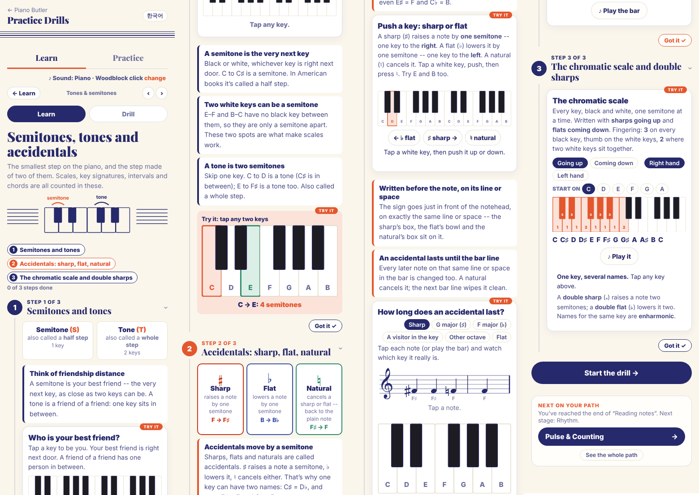

Built on your own lesson words: a semitone is your best friend -- the very next key, nobody in between; a tone is a friend of a friend -- one key in between. It also uses what you already decided: the keyboard street of chapter 2 (the small house and the big house), chapter 3's residents (Clara C, her Dog D, the Exit E, the Front door F, Grandma G, her Apple garden A, the Back door B), the bird's sky and the turtle's sea for up and down, and chapter 6's "the same key, two ways". It follows the Book rules: one idea per page, nothing twice, set tasks, big and full pages.
AMEB (checked in the 2026 Manual): Music Craft Preliminary -- recognise and write the sharp and flat. Grade 1 -- the sharp, flat and natural signs, the ideas "enharmonic" and "chromatic", tones and semitones marked on scales. Theory of Music Grade 1 -- the sharp, flat and natural, and where the tones and semitones fall in C, G and F major. Double sharps and flats: Grade 4 in both. Piano for Leisure Grade 1 technical work has a chromatic scale, hands separately.
The draft, 7 pages: 1 Clara's two best friends on the keyboard street · 2 Best friends: a semitone (the very next key, black or white) · 3 A friend of a friend: a tone (one key between; two semitones) · 4 White best friends: E F and B C (the Exit and the Front door; the Back door and Clara) · 5 Sharp and flat: one key, two names (C♯ = D♭ ...) · 6 Sharps and flats on the staff (just before the note, on its line or space; Queensland and Kingsland) · 7 My five checks.
How to answer: reply with codes, e.g. "B1 yes, B5 a, A2 ok". Yellow marks in the draft (B1, B3, B4, B5, B8) show the lines that wait for your answers.
When your students meet tones and semitones, what goes wrong most often? (My guesses: counting the key they start on as a step; calling every white-key neighbour a tone, even E F and B C; thinking a black key has only one name; writing the sign after the note, or on the wrong line.)
The best-friend picture is the heart of the chapter. Is there anything you always say or do with it in a lesson that the page should catch?
One tip for parents: what should five minutes at home look like? (My suggestion: the best-friend walk from C to C, then naming the black keys both ways.)
A · what today's chapter 7 does · B · your decisions, each with my recommendation · the 7 draft pages · today's online lesson and Workbook, for comparison.
Today chapter 7 is an online lesson in three steps (semitones and tones; accidentals; the chromatic scale and double sharps), a drill with 4 levels, and a Workbook and Teacher copy from Phase 298, made before the Book rules. There is no Lesson Book yet.
The online lesson is not a Lesson Book on screen. It is cards, tips and tools in three long steps. After your OK it becomes the book on screen, like chapters 1-6.
It teaches double sharps and the chromatic scale written out with its fingering. Those are Grade 4-5 topics in a Preliminary chapter. Its tip also says E♯ = F and C♭ = B.
"An accidental lasts until the bar line" comes before bar lines are taught. The rhythm stage starts right after this chapter.
"Half step" and "whole step" (American words) sit next to semitone and tone on the cards.
The drill: level 1 mixes everything at once; level 3 is two names for one key; level 4 is chapter 3's old "name the black keys" level. No level reads the signs on the staff.
The Workbook and Teacher copy (Phase 298) were made before the Book rules. They have faces drawn on the keys, a "map for this chapter" page, a drill page, and a check-up with a score.
The townhouse map calls this room "Sharps & flats", while the chapter is "Tones & Semitones".
All books: a double dash "--" can break across two lines. Here it splits as "them -" / "- best friends", and your chapter 6 photo shows "lands -" / "- up". I'll glue the dash to the word before it, in every book.
A separate reviewer checked every key, black-key name, heart, arrow and staff position in English and Korean, and checked the pages against the Book rules. All the music was right. I applied these fixes from its list:
Waiting on you, so not changed: Korean line breaks inside words (the keep-all question, app-wide).
The words: semitone and tone (AMEB; Korean 반음 · 온음), with your pictures "best friend" and "friend of a friend" (베프 · 친구의 친구). "Half step / whole step" appear only once, in the Teacher copy.
Recyes.
Clara is "you" on the opener. Her best friends are B (the big house's Back door, on her left) and the black key on her right. Her friends of a friend are the black key past B, and D.
Recyes.
The white best friends, told with chapter 3's residents: walk out of the Exit (E) straight to the Front door (F); out of the Back door (B) to Princess Clara (C).
Recyes. It also gets the scales chapter ready: tone, tone, semitone, tone, tone, tone, semitone.
One black key, two names (C♯ = D♭): "Clara's best friend and the Dog's best friend too", like chapter 6's "the same key, two ways". The word "enharmonic" (Music Craft Grade 1) goes only in the Teacher copy.
Recyes.
How to remember the signs: (a) just the direction: ♯ up to the best friend on the right, ♭ down to the one on the left; (b) add a picture: a flat tyre goes down; (c) your own.
Rec(a). One picture per idea, and the best friend is already the picture.
The natural ♮ is in Music Craft Grade 1 and Theory Grade 1; Preliminary asks only for ♯ and ♭. Without bar lines it has nothing to cancel.
Recteach it together with "a sign lasts until the bar line", once the rhythm stage has drawn bar lines. The other way: keep it here, with one bar line drawn.
What waits for later: double sharps and flats (Grade 4), writing the chromatic scale (Music Craft Grade 5), E♯ B♯ F♭ C♭ (the scales chapters), tone-and-a-half (harmonic minor).
Rectake them out of chapter 7's book and drill. Their tools stay in the Toolbox.
The best-friend walk at the piano on page 2: every key from C to C, 12 semitones. It is the chromatic scale (Piano for Leisure Grade 1, hands separately).
Recdo the walk; the word "chromatic" goes only in the Teacher copy.
Drill levels, one idea each: 1 best friend or friend of a friend? (two keys lit) · 2 find a best friend, up or down · 3 find a friend of a friend, up or down · 4 E F and B C: tone or semitone between white neighbours · 5 name the black keys (sharp or flat) · 6 one key, two names · 7 sharps and flats on the staff → the key (Queensland, then Kingsland).
Recthese 7.
Workbook ideas (set tasks a child can do alone, built after the book): W1 colour the two best friends of set keys (D, a black key, E, B) · W2 draw the friend-of-a-friend hop from set keys, up or down as the arrow says · W3 tone or semitone? Write T or S under white neighbours, and circle E F and B C · W4 name the black keys both ways; draw the arrow, sharp up or flat down · W5 draw a set sign before set notes on the staff; name the sharps and flats and colour the key · last page: the check-up on paper.
Recall six.
The opener: minimal, as in chapters 4-6: the keyboard street, Clara at C, and her two best friends.
Reckeep it.
The three steps today: semitones and tones (cards, tips, best friends, count the steps); accidentals (sharp, flat, natural, written before the note, until the bar line); the chromatic scale and double sharps.

Six pages from before the Book rules: the opener, "Your map for this chapter", best friend or friend of a friend, what the signs do, the chromatic scale, and a scored check-up.